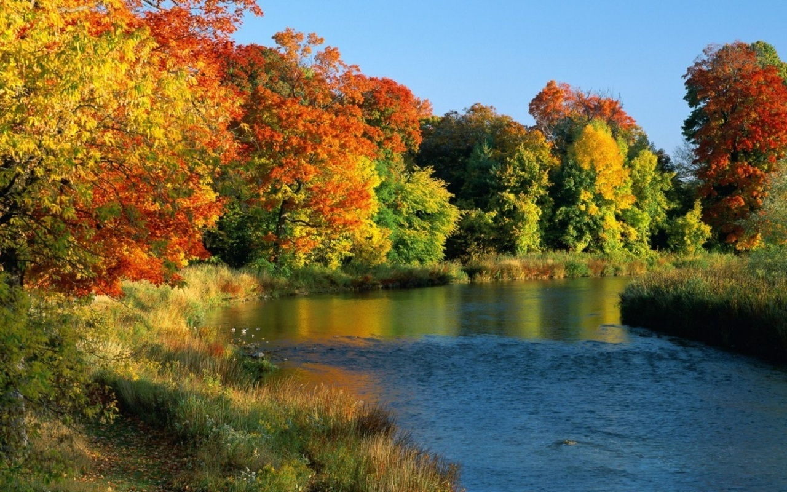
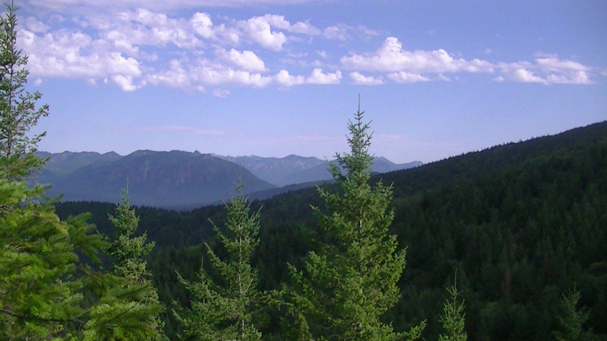

Nature is a wonderful thing. We get everything from nature: metal, brick, material. Nature gives us so many things to write about: its life, its warmth and many things more.The mountain, the tree, the animal, give us a delight in and for themselves
When man refuses to acknowledge his responsibility to care for nature, destruction occurs. Devastation happens either by omission or commission. Animals disappear and become endangered or extinct because of irresponsible hunting. Plant life is essentially destroyed by incessant cutting of trees and burning of grasslands. The atmosphere is being damaged by pollution. Global warming destroys land masses as the sea rises because of increasing temperatures. It even causes the growth and rapid spread of different kinds of bacteria and viruses.There are people who are directly responsible for the devastation in our surroundings while there are also people who do not even think about it.
